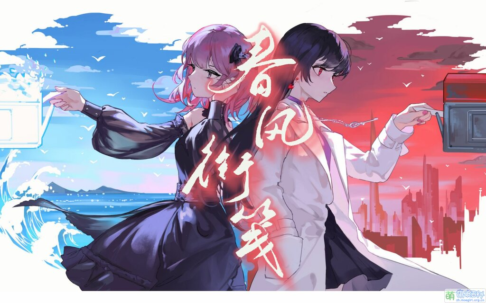
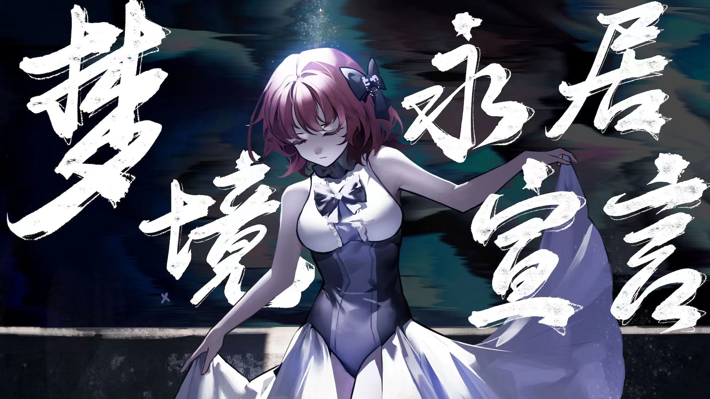

P&KU
P&KU，如名字所见，与一所叫作 PKU 的大学很显然脱不开干系。这是一个由北京大学的在读学生策划的网页解谜游戏，在游戏里，玩家可以在解谜的期间不断推进着剧情，还原属于故事主角们的记忆篇章。
春风衔笺

梦境永居宣言

P&KU，如名字所见，与一所叫作 PKU 的大学很显然脱不开干系。这是一个由北京大学的在读学生策划的网页解谜游戏，在游戏里，玩家可以在解谜的期间不断推进着剧情，还原属于故事主角们的记忆篇章。